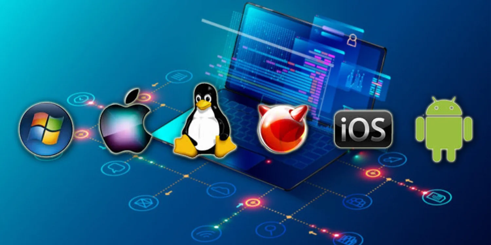
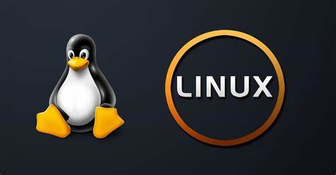
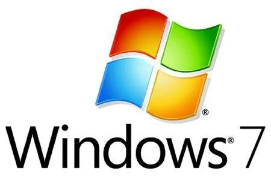
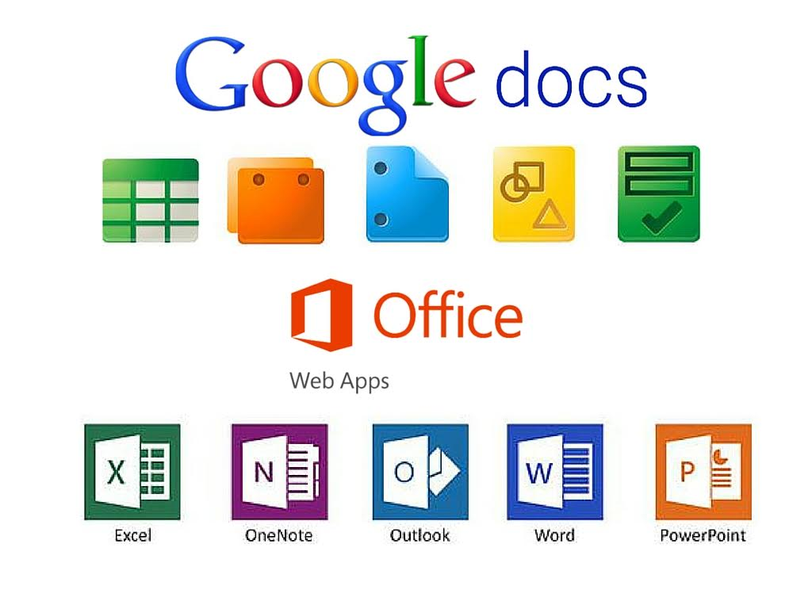
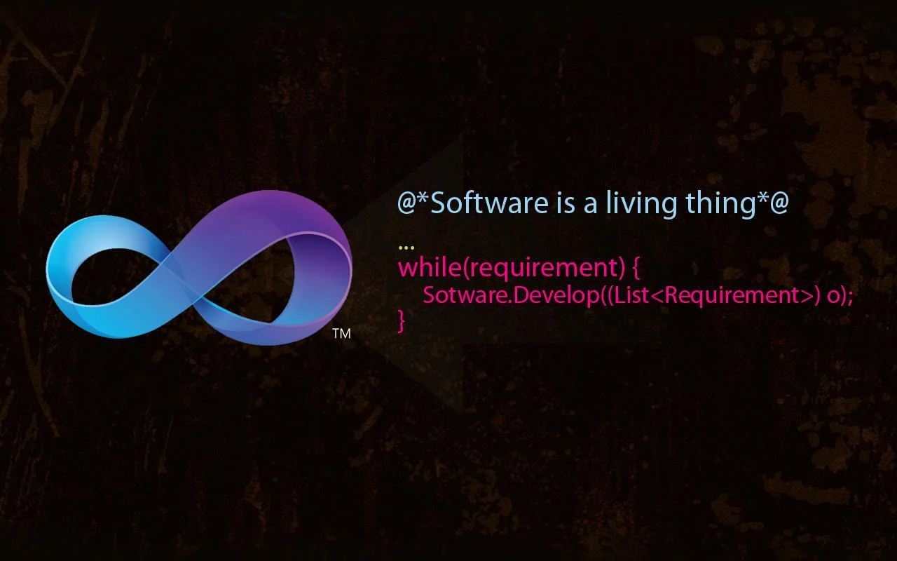

Um sistema operacional (SO) é um software fundamental que gerencia o hardware e os recursos de um computador, além de fornecer serviços essenciais para que outros programas possam funcionar. Ele atua como uma ponte entre o usuário e o hardware do computador, facilitando a execução de tarefas e garantindo que os recursos sejam utilizados de forma eficiente. Funções principais de um sistema operacional: Gerenciamento de Processos: Controla os programas em execução, aloca tempo de processamento da CPU e garante que eles sejam executados de forma ordenada. Gerenciamento de Memória: Organiza a memória RAM, garantindo que os aplicativos em execução tenham o espaço necessário para funcionar. Gerenciamento de Armazenamento: Controla como os dados são armazenados e acessados no disco rígido ou em outros dispositivos de armazenamento. Gerenciamento de Dispositivos: Coordena a comunicação entre o computador e seus periféricos, como teclado, mouse, impressoras e outros. Interface com o Usuário: Oferece uma interface gráfica (GUI) ou linha de comando (CLI) para que o usuário interaja com o sistema. Exemplos de sistemas operacionais: Windows (Microsoft) Linux (ex.: Ubuntu, Fedora, Debian) macOS (Apple) Android e iOS (para dispositivos móveis) Os sistemas operacionais são indispensáveis para o funcionamento de qualquer dispositivo, seja ele um computador, smartphone ou até mesmo um eletrodoméstico moderno. 
Um sistema livre, também conhecido como software livre, é um tipo de software que respeita a liberdade e a comunidade dos usuários. Em essência, isso significa que os usuários têm a liberdade de executar, copiar, distribuir, estudar, modificar e melhorar o software. Essas liberdades são fundamentais para promover a colaboração e a inovação. Aqui estão os quatro tipos de liberdades que caracterizam um sistema livre: Liberdade de executar o programa como desejar, para qualquer propósito. Liberdade de estudar como o programa funciona e adaptá-lo às suas necessidades. Para isso, o acesso ao código-fonte é uma condição necessária. Liberdade de redistribuir cópias do software. Dessa forma, você pode ajudar outras pessoas. Liberdade de distribuir cópias das versões modificadas do software. Assim, a comunidade pode se beneficiar das suas melhorias. Essa abordagem contrasta com o software proprietário, onde os usuários geralmente têm apenas o direito de usar o software conforme permitido pelo desenvolvedor, sem acesso ao código-fonte ou permissão para modificar e redistribuir. O movimento de software livre é frequentemente associado a organizações como a Free Software Foundation (FSF) e a licença GNU General Public License (GPL).
Linux, LibreOffice, GIMP.
Um sistema proprietário é um tipo de software cujo código-fonte não está disponível ao público e que é controlado por uma empresa ou indivíduo. Isso significa que apenas os desenvolvedores originais podem modificar o software. Esses sistemas geralmente exigem que os usuários paguem por uma licença para usá-los e estão sujeitos a termos de uso restritivos. Exemplos comuns incluem o sistema operacional Windows da Microsoft e o pacote de produtividade Microsoft Office.
Windows, Microsoft Office, macOS.
Um software de sistema é um tipo de software projetado para gerenciar e controlar o hardware do computador e fornecer uma base para a execução de outros tipos de software, como aplicativos. Ele atua como uma ponte entre o hardware e o usuário, facilitando a comunicação e garantindo que todos os componentes do sistema funcionem harmoniosamente. Exemplos comuns de software de sistema incluem sistemas operacionais (como Windows, macOS e Linux), drivers de dispositivo e utilitários de sistema.
Sistemas Operacionais, Drivers de Dispositivos, Utilitários de Sistema.

Um software de aplicativo, também conhecido como software de aplicação, é um programa de computador desenvolvido para ajudar o usuário a realizar tarefas específicas ou resolver problemas particulares. Diferentemente dos softwares de sistema, que gerenciam o hardware e fornecem uma plataforma para outros softwares, os aplicativos são voltados para o uso direto pelo usuário.
Microsoft Word, Google Docs, Microsoft Excel, Google Sheets, Google Chrome, Mozilla Firefox, WhatsApp, Microsoft Teams, Adobe Photoshop, Final Cut Pro, Spotify, Netflix.
Software de programação, também conhecido como ambiente de desenvolvimento ou ferramenta de desenvolvimento, é um tipo de software utilizado por desenvolvedores para criar, testar e manter outros softwares. Esses softwares oferecem um ambiente adequado para a escrita, edição e depuração de código-fonte.

Visual Studio, IntelliJ IDEA, Eclipse, PyCharm, Visual Studio Code, Sublime Text, Atom, Notepad++, GCC, JDK, Python Interpreter, Git, Subversion (SVN).
